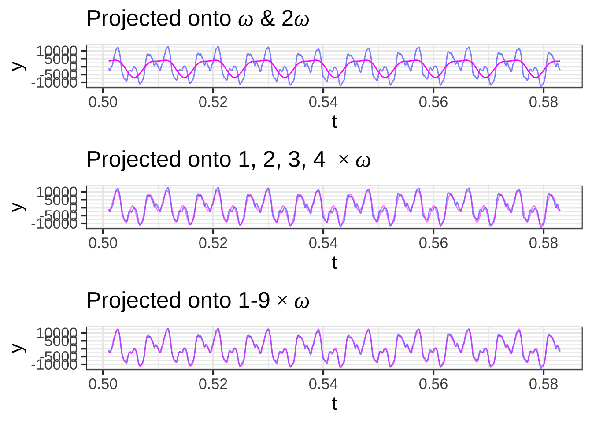
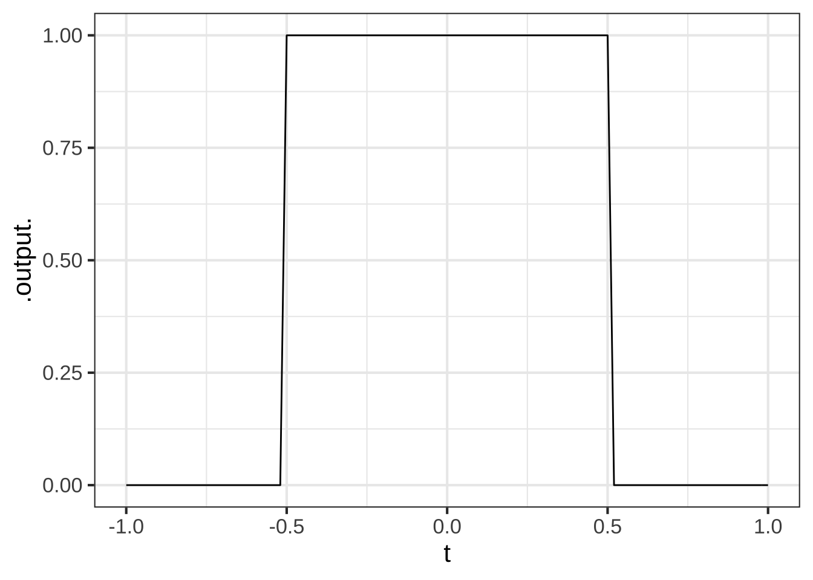

Chapter 46 Functions as vectors
Starting with Chapter 41, we have been working with the dot product, an operation that combines two vectors to produce a scalar. \[\vec{b}\bullet\vec{a} \equiv \left[\begin{array}{c}b_1\\b_2\\\vdots\\b_n\end{array}\right] \bullet \left[\begin{array}{c}a_1\\a_2\\\vdots\\a_n\end{array}\right] \equiv b_1 a_1 + b_2 a_2 + \cdots b_n a_n\] The dot product enables us to use arithmetic to calculate geometric properties of vectors, even in high dimensional spaces that are out of reach of a ruler or protractor. For instance
- length: \(\|\vec{a}\| = \sqrt{\strut\vec{a}\bullet\vec{a}}\)
- included angle: \[\cos(\theta_{ab}) = \left[\vec{a}\bullet\vec{b}\right] / \left[\sqrt{\strut \strut\vec{a}\bullet\vec{a}}\sqrt{\strut \strut\vec{b}\bullet\vec{b}}\right]\]
- projection onto \(\vec{a}\): \[\text{model vector:}\ \ \hat{b} = \left[\vec{b} \bullet \vec{a}\right] \,\vec{a} / {\len{a}^2} = \left[\vec{b} \bullet \vec{a} {\LARGE/} \vec{a} \bullet \vec{a}\right]\ \vec{a}.\]
We used such operations to solve the target problem: finding the best approximation of a vector \(\vec{b}\) as a linear combination of a set of vectors in a matrix \(\mathit{A}\).
As early as Block 1, we constructed functions as a linear combination of other functions, for example: \[g(t) \equiv A + B \sin\left(\frac{2 \pi}{P} t\right)\] where \(A\) is the scalar multiplier for the function \(\text{one}(t) \equiv 1\) and \(B\) the scalar multiplier for the sinusoid of period \(P\).
We’re going to revisit the idea of linear combinations of functions using our new tools of length, included angle, and projection. To do this, we need to have a definition of the dot product suitable for application to functions.
46.1 Dot product for functions
Given two functions, \(f(t)\) and \(g(t)\) defined over some domain \(D\), we’ll compute the dot product of the functions as a sum of the product of the two functions, that is: \[f(t) \bullet g(t) \equiv \int_{D} f(t)\,g(t)\,dt\ .\] ::: {.example data-latex=""} Suppose that our two functions are \(\text{one}(t) \equiv 1\) and \(\text{identity}(t) \equiv t\) on the domain \(0 \leq t \leq 1\). Find the length of each function and the included angle between them.
Length: \(\|\text{one}(t)\| = \left[\int_0^1 1 \cdot 1\,dt\right]^{1/2} = \left[\ \strut t\left.{\large\strut}\right|_0^1\ \right]^{1/2} = 1\)
Length: \(\|\text{identity}(t)\| = \left[\int_0^1 t \cdot t\,dt\right]^{1/2} = \left[\ \strut \frac{1}{2}t^2\left.{\large\strut}\right|_0^1\ \right]^{1/2} = \frac{1}{\sqrt{2}}\)
Included angle: \[\cos(\theta) = \frac{\text{one}(t) \bullet \text{identity}(t)}{\|\strut\text{one}(t)\| \, \|\text{identity}(t)\|} = \sqrt{2}\ \int_0^1 t\, dt = \sqrt{\strut 2} \left.{\Large\strut}\frac{1}{2} t^2\right|_0^1 = \sqrt{\frac{1}{2}}\] Since \(\cos(\theta) = \sqrt{1/2}\), the angle \(\theta\) is 45 degrees. :::
Example 46.1 Project \(f(t) \equiv t^2\) onto \(g(t) = \text{one}(t)\) over the domain \(-1 \leq t \leq 1\).
The projection of \(f(t)\) onto \(g(t)\) will be \[\widehat{f(t)} = \frac{f(t) \bullet g(t)}{g(t) \bullet g(t)}\ g(t)\]
\(f(t) \bullet g(t) \equiv \int_{-1}^{1} t^2 dt = \frac{1}{3} \left.{\Large \strut}t^3\right|_{-1}^{1} = \frac{2}{3}\)
\(g(t) \bullet g(t) \equiv \int_{-1}^1 \ dt = 2\)
Thus, \[\widehat{f(t)} = \frac{1}{3} \text{one(t)} = \frac{1}{3}\ .\]
The left panel of Figure 46.1 shows the functions \(f(t) \equiv t^2\) and \(\color{magenta}{\widehat{f(t)} \equiv 1/3}\) on the domain. The center panel shows the residual function, that is \(f(t) - \widehat{f(t)}\). The right panel gives the square of the length of the residual function, which is \(\int_{-1}^1 \left[f(t) - \widehat{f(t)}\right]^{1/2}\, dt\) as indicated by the area shaded in \(\color{blue}{\text{blue}}\).
Figure 46.1: Projecting \(f(t) \equiv t^2\) onto \(g(t) \equiv \text{one}(t)\).
The table links to audio files recorded by a human speaker voicing various vowels. Play the sounds to convince yourself that they really are the vowels listed. (It may help to use the controls to slow down the playback.)
| Vowel | Player |
|---|---|
| “o” as in “stone” | |
| “e” as in “eel” |
As you may know, the physical stimuli involved in sound are rapid oscillations in air pressure. Our standard model for oscillations is the sinusoid function, which is parameterized by its period and it’s amplitude. The period of a sound oscillation is short: between 0.3 and 10 milliseconds. The amplitude is small. To get a sense for how small, consider the change in air pressure when you take an elevator up 10 stories in a building. The pressure amplitude of sound at a conversational level of loudness corresponds to taking that elevator upward by 1 to 10 mm.
The shapes of the “e” (as in “eel”) and “o” (as in “stone”) sound waves—in short, the waveforms—are drawn in Figure 46.2.
Figure 46.2: The waveforms of two vowel sounds. Only about five hundredths of a second is shown.
The function resembles none of our small set of pattern-book functions. It is more complicated, more detailed, more irregular than any of the basic modeling functions featured in this book.
For many tasks it’s helpful to have a modeling approach that’s well suited to such detailed and irregular functions. For example, we might want to identify the speaker from a recording, or to play the recording slower or faster without changing the essence of the sound, or to tweak the function to have additional properties such as being exactly on tune while maintaining its individuality as a sound.
A remarkable aspect of the waveforms in Figure 46.2 is their periodicity. The 0.05 sec graphics domain shown includes roughly seven repetitions of a basic waveform. That is, each cycle lasts about \(\frac{0.05 \text{s}}{7} \approx 7 \text{ms}\). what distinguishes the “e” waveform from the “o” waveform is the shape of the waveform that’s being repeated. The individual cycle of the “o” has three peaks of diminishing amplitude. The “e” cycle has two main peaks, high then low. It also has a very fast wiggle superimposed on the two peaks.
An important strategy for modeling such complicated oscillations is to decompose (synonym: analyze) them into a linear combination of simpler parts.
46.2 Sinusoids as vectors
The sinusoid is our fundamental model of periodic phenomena. To get started with using sinusoids as vectors, we’ll start with a simple setting: a single sinusoid of a specified frequency.
Figure 46.3 shows three sinusoids all with the same frequency, but shifted somewhat in time:
Figure 46.3: Three sinusoids with a frequency of \(\omega=3\) cycles per second.
Since we have a dot product for functions, we can treat each of the three sinusoids as a vector. For instance, consider the length of waveforms A and B and the included angle between them.
## vector lengths
lengthA <- Integrate(waveA(t) * waveA(t) ~ t, domain(t=0:1)) %>% sqrt()
lengthA## [1] 0.7071068
lengthB <- Integrate(waveB(t) * waveB(t) ~ t, domain(t=0:1)) %>% sqrt()
lengthB## [1] 0.7071068
lengthC <- Integrate(waveC(t) * waveC(t) ~ t, domain(t=0:1)) %>% sqrt()
lengthC## [1] 0.7071068
## dot products
dotAB <- Integrate(waveA(t) * waveB(t) ~ t, domain(t=0:1))
dotAB## [1] -3.984443e-18
dotAC <- Integrate(waveA(t) * waveC(t) ~ t, domain(t=0:1))
dotAC## [1] -0.1545085
dotBC <- Integrate(waveB(t) * waveC(t) ~ t, domain(t=0:1))
dotBC## [1] -0.4755283
The cosine of the included angle \(\theta\) between functions A and B is calculated using the the dot product formula: \[\cos(\theta) = \frac{A\bullet B}{\|A\|\, \|B\|}\] or, computationally
dotAB / (lengthA * lengthB)## [1] -7.968886e-18
Since \(\cos(\theta) = 0\), wave A and B are orthogonal. Admittedly, there is no right angle to be perceived from the graph, but the mathematics of angles gives this result.
The graphical presentation of orthogonality between waveforms A and B is easier to appreciate if we plot out the dot product itself: the integral of waveform A times waveform B. Figure 46.4 shows this integral using colors, blue for positive and orange for negative. The integral is zero, since the positive (blue) areas exactly equal the negative (orange) areas.
Figure 46.4: The dot product between waveforms A and B, graphically.
In contrast, waveform A is not orthogonal to waveform C, and similarly for waveform B. Figure 46.5 shows this graphically: the positive and negative areas in the two integrals do not cancel out to zero.
Figure 46.5: The dot products between waveforms A and C (top panel) and between B and C (bottom panel).
We can project waveform C onto the 2-dimensional subspace spanned by A and B. Since waveforms A and B are orthogonal, This can be done simply by projecting C onto each of A and B one at a time. Here’s a calculation of the scalar multipliers for A and for B and the model vector (that is, the component of C in the A-B subspace):
A_coef <- dotAC / lengthA^2
B_coef <- dotBC / lengthB^2
mod_vec <- makeFun(A_coef*waveA(t) + B_coef*waveB(t) ~ t)
# length of mod_vec
Integrate(mod_vec(t)*mod_vec(t) ~ t, domain(t=0:1)) %>% sqrt()## [1] 0.7071068
You can see that the length of the model vector is exactly the same as the length of the vector being projected. This means that waveform C lies exactly in the subspace spanned by waveforms A and B.
A time-shifted sinusoid of frequency \(\omega\) can always be written as a linear combination of \(\sin(2\pi\omega t)\) and \(\cos(2\pi\omega t)\). The coefficients of the linear combination tell us both the amplitude of the time-shifted sinusoid and the time shift.
Example 46.2 Consider the function \(g(t) \equiv 17.3 \sin(2*pi*5*(t-0.02)\) on the domain \(0 \leq t \leq 1\) seconds. The amplitude is 17.3. The time shift is 0.02 seconds. Let’s confirm this using the coefficients on the linear combination of sine and cosine of the same frequency.
g <- makeFun(17.3 * sin(2*pi*5*(t-0.02)) ~ t)
sin5 <- makeFun(sin(2*pi*5*t) ~ t)
cos5 <- makeFun(cos(2*pi*5*t) ~ t)
A_coef <- Integrate(g(t) * sin5(t) ~ t, domain(t=0:1)) /
Integrate(sin5(t) * sin5(t) ~ t, domain(t=0:1))
A_coef## [1] 13.99599
B_coef <- Integrate(g(t)*cos5(t) ~ t, domain(t=0:1)) /
Integrate(cos5(t) * cos5(t) ~ t, domain(t=0:1))
B_coef## [1] -10.16868
The amplitude of \(g(t)\) is the Pythagorean sum of the two coefficients:
sqrt(A_coef^2 + B_coef^2)## [1] 17.3
The time delay involves the ratio of the two coefficients:
atan2(B_coef, A_coef) / (2*pi*5) ## [1] -0.02
For our purposes here, we’ll need only the Pythagorean sum and will ignore the time delay.
Figure 46.6 (top) shows the waveform of a note played on a cello. The note lasts about 1 second. The bottom panel zooms in on the waveform, showing 82 ms (that is, 0.082 s).
Figure 46.6: Waveform recorded from a cello.
The whole note starts with a sharp “attack,” followed by a long period called a “sustain,” and ending with a “decay.” Within the sustain and decay, the waveform is remarkably repetitive, seen best in the bottom panel of the figure.
If you count carefully in the bottom panel, you’ll see that the waveform completes 9 cycles in the 0.082 s graphical domain. This means that the period is 0.082 / 9 = 0.0091 s. The frequency \(\omega\) is the reciprocal of this: 1/0.0091 = 109.76 Hz. That is, the cello is vibrating about 110 times per second.
In modeling the cello waveform as a linear combination of sinusoids, the frequencies we use ought to respect the period of the cello vibration. Figure 46.7 shows the original waveform as well as the projection of the waveform onto a sinusoid with a frequency of 109.76 Hz. The figure also shows the residual from the projection, which is simply the original waveform minus the projected version.
Figure 46.7: Top: The cello waveform and its projection onto a sinusoid with frequency \(\omega = 109.76\) Hz. Bottom: The residual from the projection.
The sinusoid with \(\omega = 109.76\) is not the only one that will repeat every 0.0091 s. So will a sinusoid with frequency \(2\omega = 219.52\), one with frequency \(3\omega = 329.28\) and so on. These multiples of \(\omega\) are called the harmonics of that frequency. In Figure ?? (top) the cello waveform is projected onto \(\omega\) and its first harmonic \(2\omega\). In the middle panel, the projection is made onto \(\omega\) and its first three harmonics. In the bottom panel, the projection is onto \(\omega\) and its first eight harmonics.
 As the number of harmonics increases, the approximation gets better and better.
Until now, all the plots of the cello waveform have been made in what’s called the time domain. That is, the horizontal axis of the plots has been time, as seems natural for a function of time.
The decomposition into sinusoids offers another way of describing the cello waveform: the frequency domain. In the frequency domain, we report the amplitude and phase of the projection onto each frequency, plotting that versus frequency. Figure 46.8 shows the waveform in the frequency domain.
Figure 46.8: The frequency domain description of the cello waveform.
From the amplitude graph in Figure 46.8, you can see that only a handful of frequencies account for almost all of the signal. Thus, the frequency domain representation is in many ways much more simple and compact than the time domain representation.
The frequency domain description is an important tool in many fields. As you’ll see in Block 6, models of many kinds of systems, from the vibrations of buildings during an earthquake, aircraft wings in response to turbulence, and the bounce of a car moving over a rutted road have a very simple form when stated in the frequency domain. Each sinusoid in the input (earthquake shaking, air turbulence, rutted road) gets translated into the same frequency sinusoid in the output (building movement, wing bending, car bound): just the amplitude and phase of the sinusoid is altered.
The construction of the frequency domain description from the waveform is called a Fourier Transform, one of the most important techiques in science.
An important tool in chemistry is molecular vibrational spectroscopy in which a sample of the material is illuminated by an infrared beam of light. The frequency of infrared light ranges from about \(300 \times 10^7\) Hz to \(400 \times 10^{10}\) Hz, about 30 million to 40 billion times faster than the cello frequency.
Infrared light is well suited to trigger vibrations in the various bonds of a molecule. By measuring the light absorbed at each frequency, a frequency domain picture can be drawn of the molecules in the sample. This picture can be compared to a library of known molecules to identify the makeup of the sample.
The analogous procedure for stringed musical instruments such as the cello or violin would be to rap on the instrument and record the hum of the vibrations induced. The Fourier transform of these vibrations effectively paint a picture of the tonal qualities of the instrument.
46.3 Exercises
Exercise 46.03:  uKOO7K
uKOO7K
Consider these functions/vectors on the domain \(0 \leq t \leq 1\):
- \(s_1(t) \equiv \sin(2\pi t)\)
- \(s_2(t) \equiv \sin(2 \pi 2 t)\) (that is, \(\omega = 2\))
- \(s_3(t) \equiv \sin(2 \pi 3 t)\) (that is, \(\omega = 3\))
- \(c_0(t) \equiv \cos(\pi t)\)
- \(c_1(t) \equiv \cos(2 \pi t)\)
- \(c_2(t) \equiv \cos(2 \pi 2 t)\)
Plot out each of the functions on the domain. How many complete cycles does each function complete as \(t\) goes from 0 to 1?
What is the length of each function?
All of the functions are mutually orthogonal except one. Which is the odd one out? (Hint: If the dot product is zero, the vectors are orthgonal.)
Exercise 46.05: sNEKcy
Here is a square-wave function:
sq_wave <- makeFun(ifelse(abs(t) <= 0.5, 1, 0) ~ t)
slice_plot(sq_wave(t) ~ t, domain(t=-1:1)) Find the projection of the square wave onto each of these functions (using the domain \(-1 \leq t \leq 1\)):
- \(c_0 \equiv 1\)
- \(c_1 \equiv \cos(1 \pi t)\)
- \(c_2 \equiv \cos(2 \pi t)\)
- \(c_3 \equiv \cos(3 \pi t)\)
- \(c_4 \equiv \cos(4 \pi t)\)
- \(c_5 \equiv \cos(5 \pi t)\)
- \(c_6 \equiv \cos(6 \pi t)\)
- \(c_7 \equiv \cos(7 \pi t)\)
Hint: To find the scalar multiplier of projecting \(g(t)\) onto \(f(t)\), use \[\int_{-1}^1 g(t)\, f(t)\, dt {\LARGE /} \int_{-1}^1 f(t)\, f(t)\,dt\] or, in R/mosaic
A <- Integrate(g(t)*f(t) ~ t, domain(t=-1:1)) /
Integrate(f(t)*f(t) ~ t, domain(t=-1:1))Then the projection of \(g()\) onto \(f()\) is \(A\, f(t)\).
Write down the scalar multiplier on each of the 8 functions above.
If you calculated things correctly, this is the linear combination of the 8 functions that best matches the square wave.